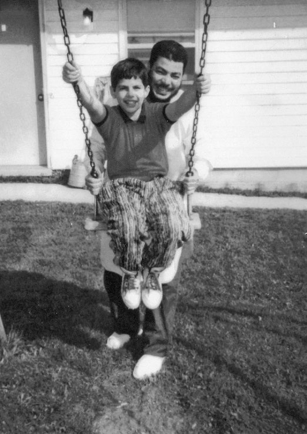
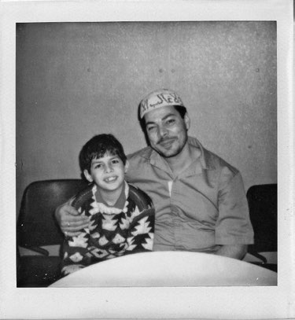

Lúc này tôi đã mười tuổi và tôi bị bắt nạt ở trường suốt mấy năm nay rồi. Tôi không thể tự lừa mình mãi rằng bạn bè bắt nạt tôi chỉ bởi chúng biết cha tôi là ai. Có lẽ tôi phải dành cả đời mình để tìm kiếm lý do, tôi giống như một thỏi nam châm thu hút những kẻ bạo hành vậy. Trò bắt nạt mới nhất là chúng đợi sau khi tôi mở tủ đồ của mình, dộng đầu tôi vào cửa tủ và chạy mất. Bất cứ khi nào trò này diễn ra, thầy hiệu trưởng đều nói rằng ông ta muốn “công bằng cho cả hai bên,” vì thế kết cục là tôi luôn luôn bị nhốt chung một chỗ với những kẻ bắt nạt mình. Nỗi sợ hãi và giận dữ ăn sâu vào tiềm thức tôi. Hôm đó là thứ Sáu, tôi được mẹ cho phép nghỉ học vì một bệnh mà chúng tôi đồng ý gọi là “bệnh ói mửa” (bệnh do một nhóm siêu vi khuẩn gây ra chứng viêm dạ dày cấp tính).
Tôi nằm lỳ trên chiếc đi văng, theo dõi bộ phim Harry và gia đình Hendersons , một bộ phim kể về một gia đình cố gắng giấu cảnh sát nuôi một sinh vật kiểu quái vật Bigfoot, bởi họ tin rằng cảnh sát sẽ không thể hiểu được sinh vật ấy tốt bụng và hiền lành đến nhường nào. Khi tôi đang xem đến giữa bộ phim, thì một tin tức giật gân được phát sóng. Lúc đó mẹ tôi đang mải mê viết cuốn tiểu thuyết lịch sử của bà, cho nên không bận tâm đến việc tắt ti vi.
Một vụ nổ xảy ra ở bãi đỗ xe dưới tòa tháp phía Bắc của Trung tâm Thương mại Thế giới. NYPD, FBI, Cục Cảnh sát đặc nhiệm về thuốc lá, vũ khí và chất cồn nhanh chóng có mặt tại hiện trường và đưa ra giả thuyết ban đầu là do một chiếc máy biến áp phát nổ.
Tôi chạy lại gõ cửa phòng ngủ của mẹ. Mẹ không đáp cho nên tôi mở hé cánh cửa một chút. Mẹ tôi đang ngồi bên chiếc bàn của bà và vẫn đắm chìm trong cuốn tiểu thuyết dang dở kể về một cô gái người Mỹ phiêu lưu đến vùng đất Trung Đông. Đó là tất cả những gì tôi biết và mẹ tôi vẫn đang trong trạng thái xuất thần.
“Mẹ nên ra ngoài này một lát,” tôi nói. “Có chuyện gì đó đang xảy ra.”
“Mẹ không thể,” mẹ tôi đáp mà không nhìn tôi lấy một cái.
“Nhưng-”
“Yên lặng nào, Z. Nữ nhân vật của mẹ đang mắc kẹt trong một trận bão cát, và con lạc đà của cô ấy không nhúc nhích một bước...”
Vì thế tôi đành trở lại đi-văng và theo dõi tin tức hàng giờ liền. Đống đổ nát thật khủng khiếp. Mọi người hoảng loạn chạy ra, người họ phủ đầy tro bụi. Một phóng viên có mặt tại hiện trường tỏ ra kinh sợ, “Chúng tôi chưa từng chứng kiến bất cứ điều gì giống như vậy trước đây.” Vào lúc ba giờ chiều, mẹ tôi cuối cùng cũng ra khỏi phòng ngủ, hấp háy mắt trước ánh mặt trời như thể bà vừa bước ra từ một hang động vậy. Bà nhìn về phía chiếc ti vi và ngừng lại giây lát.
“Sao con không nói cho mẹ?” mẹ chất vấn tôi.
⚝ ✽ ⚝
Hàng trăm điệp viên FBI chui vào đống đất đá vụn tại địa điểm xảy ra vụ nổ. Họ loại bỏ giả thuyết vụ nổ xuất phát từ chiếc máy biến áp khi phát hiện ra những mảnh vụn còn sót lại của một chiếc xe tải Ryder chở chất nổ. FBI lần theo đầu mối từ chiếc xe và tìm ra Mohammed Salameh – người đàn ông làm nghề vận chuyển đã từng hứa cưới chị tôi khi chị ấy đủ tuổi. Họ bắt giữ anh ta vào ngày 4 tháng Ba khi anh ta trở lại công ty cho thuê xe để trình báo về chiếc xe tải bị mất cắp và đòi lại 400 đô la tiền cọc của anh ta. Những tháng tiếp theo, toàn nước Mỹ rúng động bởi giả thuyết có vẻ vô lý trước đó về một tổ chức khủng bố có mặt ngay tại đất nước này, cũng như trước sự thật rằng các tổ chức văn phòng chính phủ đều không hề ý thức được vấn đề này trước khi nó xảy ra. Mất rất nhiều năm để bỏ tù kẻ âm mưu tấn công Trung tâm Thương mại Thế giới năm đó, nhưng những bài báo chi tiết về các âm mưu gây hoang mang dư luận vẫn xuất hiện đều đặn hàng ngày.
Lúc đó một bí mật rùng rợn bị phanh phui: Cha tôi nhúng tay vạch kế hoạch vụ tấn công từ phòng giam của ông ở Attica, tận dụng những kẻ đến thăm ông để liên lạc với những kẻ khác ở nhà. Một trong những kẻ cấu kết với cha tôi là cố vấn cũ của ông, Thủ lĩnh mù, kẻ vẫn đang lẩn trốn và ban bố những fatwa trên đất Mỹ, cho dù đã để lộ thân phận là một tên khủng bố khét tiếng. Tên Tù trưởng mù này trao cho những kẻ thần phục hắn một thứ gọi là “chỉ dẫn tinh thần.” Theo giới chức trách, hắn không chỉ khuyến khích âm mưu tấn công Trung tâm Thương mại Thế giới, mà còn trực tiếp ký duyệt một kế hoạch khác, một kế hoạch sẽ đem đến nhiều thương vong hơn một khi trở thành hiện thực: năm quả bom khác nhau được cài đặt trong vòng mười phút tại Liên Hợp Quốc, đường hầm Lincoln và Holland, cầu Washington, và tòa nhà Liên bang FBI tại thành phố New York.
Vì những mục đích thực tế, kế hoạch tấn công Trung tâm Thương mại Thế giới được tiến hành bởi một tên khủng bố gốc Kuwait, Ramzi Yousef. Hắn ta đã theo học chuyên ngành kỹ sư điện ở Wales và chế tạo bom tại một trại huấn luyện ở Pakistan. Vào năm 1992, hắn đến Mỹ với một hộ chiếu Iraq giả, mặc dù bị bắt, xong hắn không bị giam giữ nhờ khăng khăng rằng mình bị tâm thần. Ngày xét xử được ấn định. Và, bởi phòng giam tập thể đã đủ người cho nên Yousef được phóng thích ở New Jersey, nơi mà hắn ta và đồng bọn bắt đầu thu thập những thành phần cho quả bom của chúng. Chỉ vài giờ sau vụ tấn công, Yousef rời Mỹ mà không gặp bất cứ trở ngại nào. “Chúng tôi nhận trách nhiệm cho vụ nổ trong tòa nhà được đề cập đến,” hắn ta viết trong một bức thư gửi đến tờ New York Times. “Hành động đáp trả này có liên quan đến việc Mỹ đã ủng hộ về mặt chính trị, kinh tế và quân sự cho Israel, thủ phủ của chủ nghĩa khủng bố, và cho tất cả những quốc gia độc tài khác trong khu vực.”
Tất nhiên, sáu nạn nhân trong vụ nổ này không hề liên quan đến chính sách đối ngoại của Mỹ. Trên thực tế, vụ nổ bom này, giống như những âm mưu khác, chỉ nhằm mục đích khơi gợi hận thù mà thôi. Tôi ước mình có thể làm nhiều điều hơn để vinh danh những nạn nhân vô tội, hơn là chỉ nhắc đi nhắc lại tên họ, nhưng tôi sẽ cảm thấy vô cùng hổ thẹn nếu tôi, ít nhất, không thể làm được điều đơn giản ấy. Tất cả bọn họ thiệt mạng khi đang làm những công việc thường ngày của mình: Robert Kirkpatrick, Bill Macko, và Stephen Knapp cùng là giám sát bảo hành của Trung tâm Thương mại Thế giới. Họ đang cùng nhau ăn trưa khi quả bom phát nổ. Monica Ridriguez Smith là một thư ký. Cô đang mang thai bảy tháng và đang làm công việc văn phòng thường ngày của mình khi thiệt mạng. Wilfredo Mercado là nhân viên của nhà hàng Windows on the World. Anh đang kiểm tra việc giao hàng lúc thảm kịch xảy ra. Và John DiGiovanni, một nhân viên bán hàng chuyên về các sản phẩm nha khoa, mất mạng khi chỉ vừa mới đỗ xe.
Mùa thu năm 1995, Chính phủ đang nỗ lực giải mã toàn bộ nội dung của bốn mươi bảy chiếc hộp thu được từ nhà chúng tôi sau vụ ám sát Kahane. Họ cho rằng vụ ám sát này là một phần của một âm mưu lớn hơn, và viện vào một lỗ hổng trong luật bất trùng khả tố, họ quyết định xét xử lại vụ án của cha tôi, cáo buộc ông tội giết người, cũng như vai trò của ông trong vụ đánh bom Trung tâm Thương mại Thế giới.
Cha tôi vẫn luôn khẳng định rằng ông hoàn toàn vô tội. Tôi tin tưởng ông bởi, ừm, bởi lúc đó tôi chỉ là một cậu bé mười hai tuổi mà thôi. Nhưng mẹ tôi thì khác, bà bắt đầu nghi ngờ cha tôi. Mẹ nghe thấy chút khác lạ trọng giọng nói của cha qua điện thoại. Cha có phần quá khích khi nói với mẹ về những âm mưu chống lại cha, về những kẻ thù của Đức Allah, những người mà cha cho rằng lời nói của họ toàn là giả dối. Trong đầu ông chất chứa kế hoạch chạy trốn, và ông hét lên như ra lệnh với mẹ tôi: Viết thư cho thẩm phán ngay! Gọi cho người ở Pakistan! Ngay lập tức đến Đại sứ quán Ai Cập! Em đã ghi lại hết những gì anh nói chưa?! Mẹ tôi chỉ đồng ý với cha một cách im lặng.
Vào ngày đầu tháng Mười, cha tôi, cùng với tên Thủ lĩnh mù và tám kẻ khác, bị kết tội cho bốn mươi tám trên tổng số năm mươi cáo buộc và chịu án tù chung thân cộng thêm mười lăm năm tù nữa mà không được hưởng bất cứ sự khoan hồng nào.
Sau khi bản án mới của cha được thực thi, chúng tôi gặp lại cha một lần tại Trung tâm giam giữ Metropolitan ở New York. Mẹ tôi lo sợ cho tương lai của bà và của chúng tôi. Chúng tôi lâm vào cảnh túng quẫn. Chúng tôi không có bất cứ kế hoạch nào để sống, và không còn hy vọng rằng cha tôi sẽ trở về làm một người cha, người chồng đúng nghĩa nữa. Thậm chí cho đến bây giờ, cha tôi vẫn không thừa nhận tội lỗi của mình. Khi cha tiến lại ôm và hôn mẹ, lần đầu tiên, bà đẩy ông ra, quyết liệt đến mức bà nghĩ mình có thể nôn mửa ngay được. Suốt những năm qua, mẹ cố gắng an ủi chúng tôi rằng chúng tôi có một người cha rất yêu thương mình. Nhưng mẹ chẳng thể nào quên được lần thăm cha ở Trung tâm giam giữ Metropolitan ấy, cái ngày mà trái tim bà cuối cùng đã ngừng hy vọng. Cha tôi bị đưa đến hàng loạt các nhà tù được trang bị an ninh ở mức cao nhất trên khắp đất nước. Dù muốn thế nào, chúng tôi cũng không có tiền để trang trải cho những chuyến thăm cha. Mẹ tôi hầu như không còn tiền để trả cho những cuộc điện thoại của cha. Còn tôi thì cũng chẳng muốn nói chuyện với ông nữa. Có gì đâu cơ chứ? Bởi mỗi lần nói chuyện với tôi, cha đều chỉ hỏi: “Con vẫn chăm chỉ cầu nguyện chứ? Con có vâng lời mẹ không?” Và tất cả những gì tôi muốn nói, đó là, Cha có đối xử tốt với mẹ không, cha? Cha có biết rằng mẹ không còn tiền nữa và lúc nào bà cũng chực khóc không? Nhưng, tất nhiên, tôi quá sợ hãi để nói ra bất cứ điều gì như vậy. Vì thế cha tôi và tôi tiếp tục những cuộc trò chuyện vô nghĩa, và mỗi lúc như thế tôi chăm chăm xoắn dây điện thoại chặt hơn, chặt hơn xung quanh bàn tay mình bởi tôi không mong gì hơn là dập máy ngay lập tức.
Mẹ tôi cũng muốn ngừng những cuộc điện thoại này. Tất cả những gì bà quan tâm giờ đây chỉ là những đứa con của mình.
Bà muốn ly hôn với cha, và tất cả chúng tôi sẽ đổi họ.
Chúng tôi đến gặp cha lần cuối.

